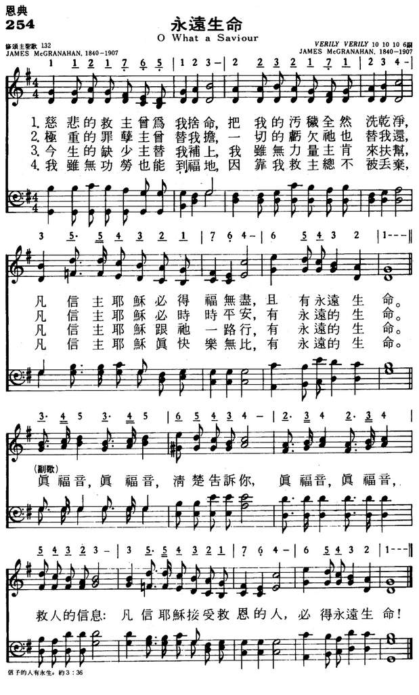
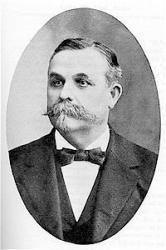

|
|
|
|
1 Oh, what a Saviour that He died for me! Refrain: 2 All my iniquities on Him were laid, 3 Though poor and needy, I can trust my Lord; 4 Though all unworthy, yet I will not doubt; |
254永远生命
1.慈悲的救主曾为我舍命
把我的污秽全然洗干净 凡信主耶稣必得福无尽 且有永远生命 真福音 真福音 清楚告诉你 真福音 真福音 救人的信息 凡信主耶稣接受救恩的人 必得永远生命 2.极重的罪孽主曾替我担 一切的亏欠祂也替我还 凡信主耶稣必时时平安 有永远的生命 3.今生的缺少主替我补上 我虽无力量主肯来扶帮 凡信主耶稣跟他一路行 有永远的生命 4.我虽无功劳也能到福地 因靠我救主总不被丢弃 凡信主耶稣真快乐无比 有永远的生命 |
|
https://www.mred365.cn/szxg/7257.html
 https://hymnary.org/hymn/HFLC1974/page/263
|
|
|
|
|


Verily,Verily. (Hymn with music and words) - James McGranahan https://www.youtube.com/watch?v=7iGSMAJVQ1w - 245. Oh, what a Savior that He died for me! (Instrumental)
https://www.youtube.com/watch?v=McDIhrVCGJQ https://www.youtube.com/watch?v=Vw_TMtq_VMk
LX1859
O What A Saviour
254永远生命
| Text: | O, What a Savior, That He Died for Me |
| Author: | James McGranahan |
| Tune: | VERILY |
| Composer: | James McGranahan |
| Short Name: | James McGranahan |
| Full Name: | McGranahan, James, 1840-1907 |
| Birth Year: | 1840 |
| Death Year: | 1907 |
James McGranahan

USA 1840-1907. Born at West Fallowfield, PA, uncle of Hugh McGranahan, and son of a farmer, he farmed during boyhood. Due to his love of music his father let him attend singing school, where he learned to play the bass viol. At age 19 he organized his first singing class and soon became a popular teacher in his area of the state. He became a noted musician and hymns composer. His father was reluctant to let him pursue this career, but he soon made enough money doing it that he was able to hire a replacement farmhand to help his father while he studied music. His father, a wise man, soon realized how his son was being used by God to win souls through his music. He entered the Normal Music School at Genesco, NY, under William B Bradbury in 1861-62. He met Miss Addie Vickery there. They married in 1863, and were very close to each other their whole marriage, but had no children. She was also a musician and hymnwriter in her own right. For a time he held a postmaster’s job in Rome, PA. In 1875 he worked for three years as a teacher and director at Dr. Root’s Normal Music Institute. He because well-known and successful as a result, and his work attracted much attention. He had a rare tenor voice, and was told he should train for the operatic stage. It was a dazzling prospect, but his friend, Philip Bliss, who had given his wondrous voice to the service of song for Christ for more than a decade, urged him to do the same. Preparing to go on a Christmas vacation with his wife, Bliss wrote McGranahan a letter about it, which McGranahan discussed with his friend Major Whittle. Those two met in person for the first time at Ashtubula, OH, both trying to retrieve the bodies of the Bliss’s, who died in a bridge-failed train wreck. Whittle thought upon meeting McGranahan, that here is the man Bliss has chosen to replace him in evangelism. The men returned to Chicago together and prayed about the matter. McGranahan gave up his post office job and the world gained a sweet gospel singer/composer as a result. McGranahan and his wife, and Major Whittle worked together for 11 years evangelizing in the U.S., Great Britain, and Ireland. They made two visits to the United Kingdom, in 1880 and 1883, the latter associated with Dwight Moody and Ira Sankey evangelistic work. McGranahan pioneered use of the male choir in gospel song. While holding meetings in Worcester, MA, he found himself with a choir of only male voices. Resourcefully, he quickly adapted the music to those voices and continued with the meetings. The music was powerful and started what is known as male choir and quartet music. Music he published included: “The choice”, “Harvest of song”, “Gospel Choir”,, “Gospel hymns #3,#4, #5, #6” (with Sankey and Stebbins), “Songs of the gospel”, and “Male chorus book”. The latter three were issued in England. In 1887 McGranahan’s health compelled him to give up active work in evangelism. He then built a beautiful home, Maplehurst, among friends at Kinsman, OH, and settled down to the composition of music, which would become an extension of his evangelistic work. Though his health limited his hours, of productivity, some of his best hymns were written during these days. McGranahan was a most lovable, gentle, modest, unassuming, gentleman, and a refined and cultured Christian. He loved good fellowship, and often treated guests to the most delightful social feast. He died of diabetes at Kinsman, OH, and went home to be with his Savior.
John Perry
James McGranahan
{kind=link}
James McGranahan was a nineteenth-century American musician and composer, most known for his various hymns. He was born 4 July 1840, in West Fallowfield or Adamsville, Pennsylvania, and died 9 July 1907 at his home in Kinsman, Ohio.[1]
He composed over 25 hymns. For example, in one work he is listed as the composer of three notable songs: "He Will Hide Me" by Mary Elizabeth Servoss, "Revive Thy Work, O Lord" by Albert Midlane, and "Come" by a "Mrs. James Gibson Johnson";[2] and he composed the music for at least 39 of the 79 hymns in a work co-authored with Ira D. Sankey.[3] McGranahan composed most of the tunes for the lyrics of Major Daniel Webster Whittle, including EL NATHAN, the tune associated with Whittle's "I Know Whom I Have Believèd" (written 1883).
The music of his hymn "My Redeemer," written for lyrics by P. P. Bliss,[4] is used as the accompaniment for the Latter-day Saints hymn "O My Father."[5]
In Hawaii, McGranahan is noted for writing the music to the hymn "I Left It All With Jesus." The melody was given new lyrics, written sometime prior to 1886 by Lorenzo Lyons, an early missionary to Hawaii, and given a new title, "Hawai'i Aloha." Lyons was known as "Makua Laiana" or simply "Laiana." By the end of the 20th century "Hawai'i Aloha" had become one of Hawaii's best known and best loved songs. It is often sung at the close of public political, spiritual, educational and sporting events.
References[edit]
- ^ The New York Times, July 10, 1907 available online
- ^ Brown, Theron and Butterworth, Hezekiah, The Story of the Hymns and Tunes. New York: American Tract Society, 1906.at Project Gutenberg
- ^ Ira D. Sankey and James McGranahan, The Christian Choir. London: Morgan & Scott, [c.1900]
- ^ The tune is often known by the first line in Bliss' lyrics, "I will sing of my Redeemer." See McCann, Forrest M. (1997). Hymns and History: An Annotated Survey of Sources. Abilene, TX: ACU Press. Pp. 154, 359-360. ISBN 0-89112-058-0
- ^ See also Calon Lân.
https://en.wikipedia.org/wiki/James_McGranahan